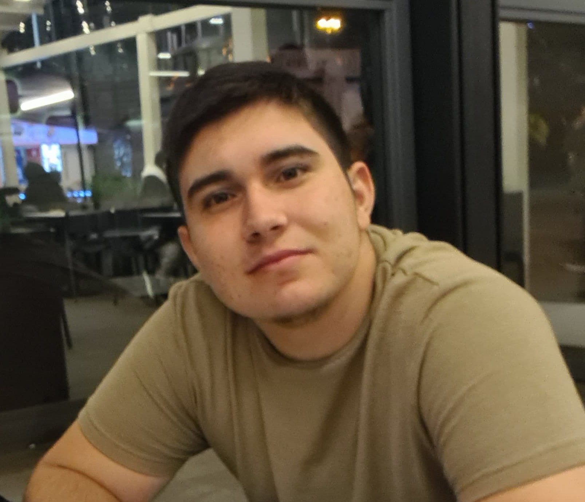

Yağız Eren Şahin

Summary
I was born in Istanbul in 2005. I'm interested in programming. I want to be full-stack developer in future. There are lots of things to I have learn but that's the all point: keep learning something.
Education
- Ahmet Keleşoğlu Highschool (2019-2023)
- Trakya Universty / Computer Engineering (2023-2027)
Skills
- Flexibility: ★★★★☆
- Responsibility: ★★★★★
- Communication Skills: ★★★☆☆
- Problem-Solving Skills: ★★★★☆
- Critical Thinking Skills: ★★★★☆
Other